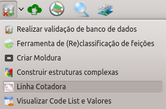
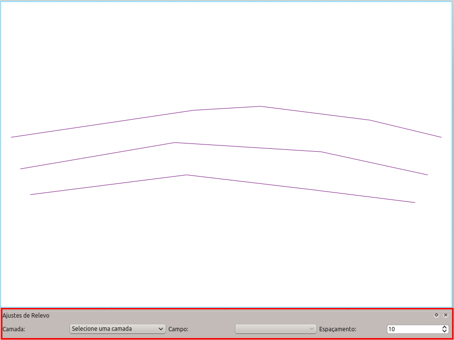
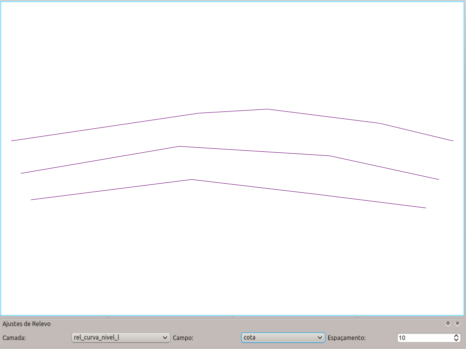
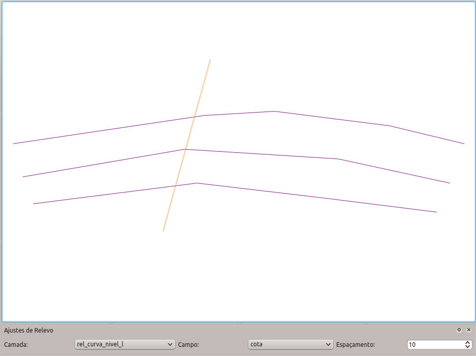
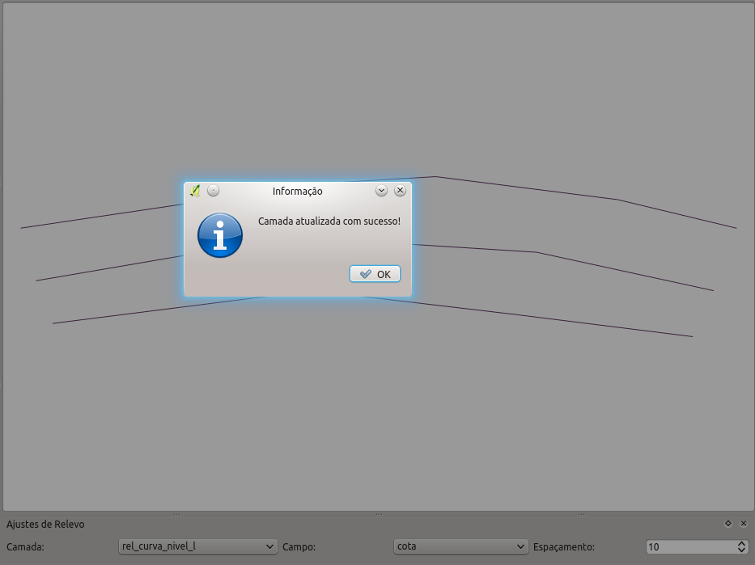

A linha cotadora permite que sejam atribuídos valores de cota para curvas de nível de maneira simples e eficiente. Para usar a ferramenta ser utilizada o usuário deve clicar no botão Linha Cotadora diretamente na barra de ferramentas pelo menu Ferrametas DSG-Ferramentas Vetoriais-Linha Cotadora . Também é possível acessar a ferramenta pelo ícone apresentado na figura abaixo.

Ao se clicar no botão da ferramenta uma nova janela aparecerá na parte inferior da área de desenho do QGIS. Nesta janela o usuário deverá definir qual a camada de curva de nível, qual o campo que deverá ser atualizado e definir o espaçamento das cotas.

Abaixo pode-se ver um exemplo de ajustes para camadas de curvas de nível criadas em bancos pelo DsgTools.

Ao se clicar no botão, a ferramenta de linha cotadora estará ativa. Ela funciona de maneira similiar a ferramentas de medição de distâncias. O usuário deve clicar na tela e criar uma linha. A linha é encerrada com o botão direito do mouse. Deve-se ter em consideração que a primeira curva de nível utilizada já deve ter a sua cota definida pelo usuário. Isso ocorre pois a primeira linha é usada como referência para a atualização das outras curvas de nível.

Havendo sucesso a seguinte mensagem aparecerá na tela.
